← Stage 索引更新：
94iVoice — jiang_dollar ⏳ 草稿審閱中
📋 草稿審閱
請確認以下三件事，確認後開始製作：
1️⃣ 腳本方向 — 內容 OK？有需要修改的地方嗎？
2️⃣ 封面文案 — 選擇 A / B / C 哪個版本？
3️⃣ 背景圖生成方式 — (D) DALL-E 3 自動生成 / (G) Google Imagen 4 生成
請確認以下三件事，確認後開始製作：
1️⃣ 腳本方向 — 內容 OK？有需要修改的地方嗎？
2️⃣ 封面文案 — 選擇 A / B / C 哪個版本？
3️⃣ 背景圖生成方式 — (D) DALL-E 3 自動生成 / (G) Google Imagen 4 生成
🖼 YouTube 封面提案
三版封面設計供參考，回覆選擇 A / B / C
提案 A

提案 B

提案 C
🖼 章節背景圖
00開場0:00 → 0:35
▶ 2026 年 3 月
#10:00 ✓ 已生成
黃昏時分，霍爾木茲海峽。低角度史詩廣角鏡頭下，數艘巨型油輪的龐大船身巍峨前行。夕陽橙光將海面染成一片金紅，天空深藍與橘紅交織。數艘伊朗革命衛隊快艇，剪影般劃破海面，緊密護航，營造出壓迫而壯麗的畫面氛圍。
01第一章：五十年前的秘密交易0:35 → 1:51
▶ 要看懂人民幣收費站
0:35 📌 標題卡
【第一章：五十年前的秘密交易】標題卡
#20:37 ✓ 已生成
在1974年美國國務院一間莊嚴的密室中，透過電影感十足的廣角鏡頭，捕捉到兩位外交官在暖黃燈光下進行一次決定性握手。深色木質牆面泛著微光，厚重窗簾半掩。一束強烈的光線斜射入室，照亮了握緊的雙手，周圍光影交錯，營造出歷史性交易的神秘與莊重。整體色調溫暖深沉，充滿復古膠片質感。
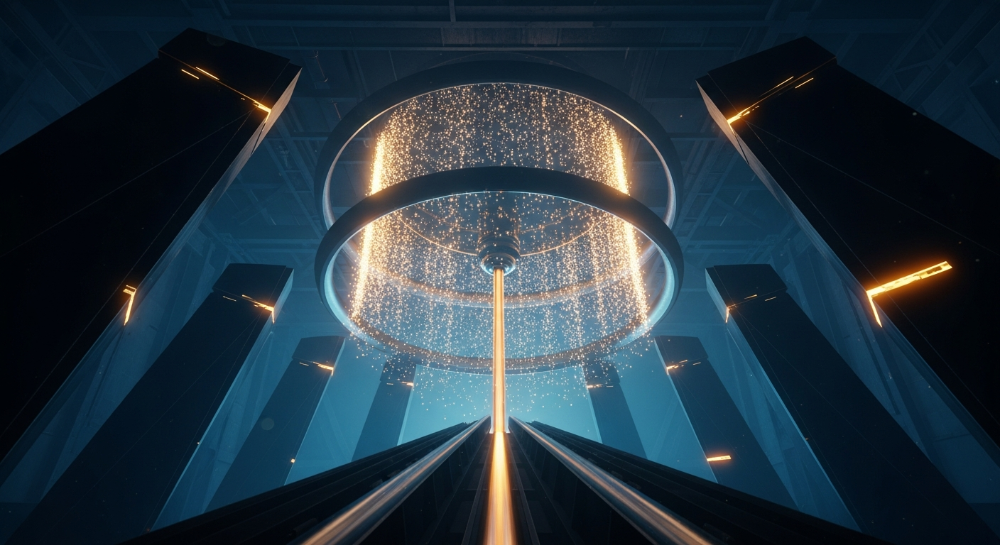
#31:21 ✓ 已生成
流程圖：石油美元閉環，沙烏地石油美元計價，全球持美元儲備，美國低利借款，軍事保護回路
02第二章：霍爾木茲的人民幣收費站1:51 → 3:11
▶ 先看霍爾木茲有多重要
1:51 📌 標題卡
【第二章：霍爾木茲的人民幣收費站】標題卡
#41:53 ✓ 已生成
圖表：各國石油進口仰賴霍爾木茲比例，日本75，印度60，中國40，全球海運27
#52:35 ✓ 已生成
幾艘伊朗革命衛隊快艇，在波斯灣黃昏的波濤中疾馳。低角度仰拍，漆黑艇身與甲板上全副武裝的士兵，被背後血橙色的落日餘暉勾勒出銳利輪廓。海面波光粼粼，反射著深紫與火紅，營造出壓迫感的強烈反差。士兵們的剪影堅毅不動，充滿戲劇張力與示示威感。
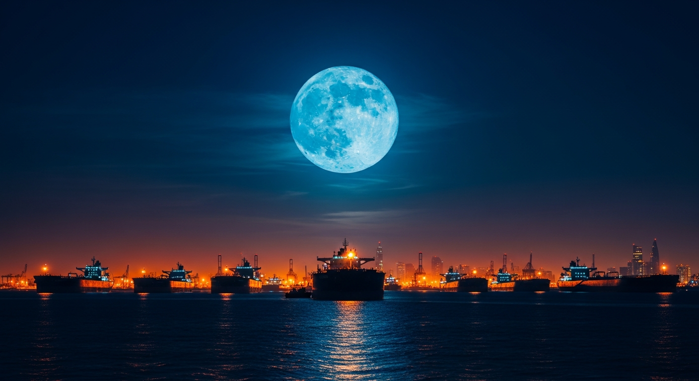
#63:00 ✓ 已生成
史詩級廣角低視角。波斯灣深沉夜色中，數十艘巨型油輪巍然靜止。深藍月光與遠方港口橙黃燈火交織，城市天際線閃爍。冷峻深邃的藍黑色調與局部暖光形成強烈對比。畫面宏大而壓抑，充滿靜默中醞釀的電影感張力。
03第三章：三波衝擊，傳到你這裡3:11 → 5:26
▶ 江教授說
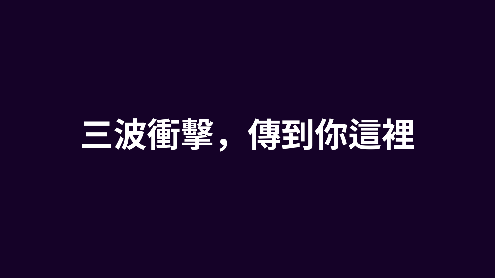
3:11 📌 標題卡
【第三章：三波衝擊，傳到你這裡】標題卡
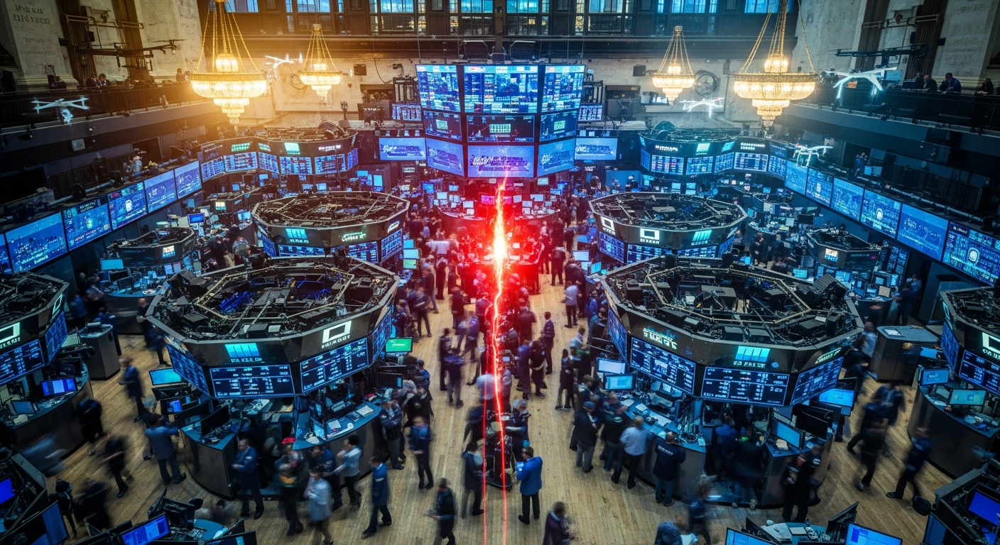
#73:13 ✓ 已生成
廣角俯視紐約證交所大廳，暖黃燈光與屏幕的冷藍光激烈交織。交易員身影模糊成高速移動的流線，巨型顯示器上抽象數據瘋狂跳動，間或閃現無人機剪影。畫面中央隱約升騰紅熱火光，營造資金急劇燃燒的緊張感。高對比，電影感。
#83:43 ✓ 已生成
夜幕低垂，雨絲中極端特寫一支濕漉漉的油槍，黑色膠管纏繞。數字顯示屏上的金額瘋狂跳動，頂棚慘白冷光投下，地面反射著霓虹藍綠色光暈。畫面略帶傾斜，景深極淺，遠處車燈化為模糊光斑。整體色調壓抑、高對比，營造出濕潤、孤寂且充滿無形壓力的電影氛圍。
#94:28 ✓ 已生成
廣闊無塵室內，防護服技術人員在巨大儀器間操作藍光晶圓。冷冽藍白光流淌，超導幽藍輝光閃爍，偶有極微弱紅色警告。宏大廣角低角度，仰視精密管線，冰冷高科技感中透出深邃不安的未來張力。
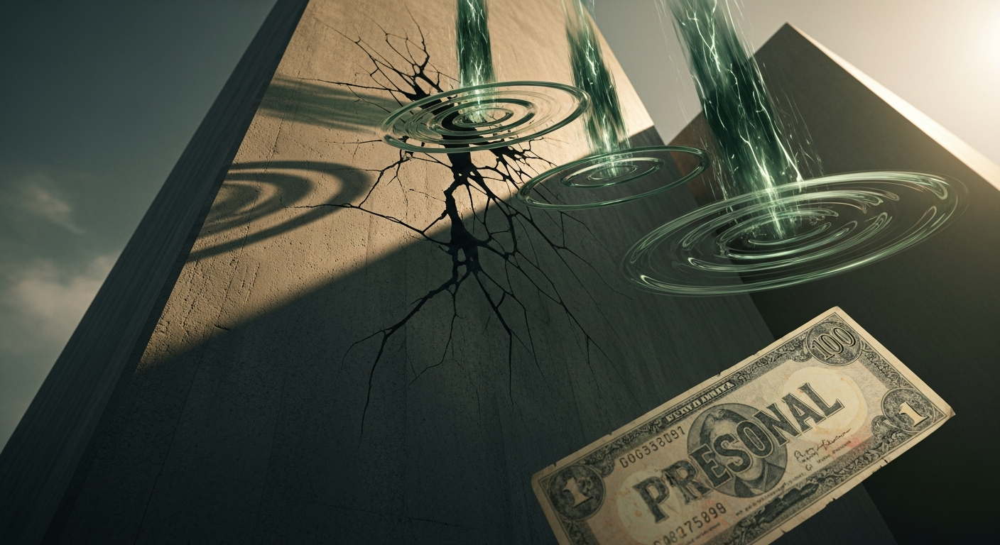
#105:01 ✓ 已生成
流程圖：三波衝擊傳導，軍費不對稱，能源成本上漲，信譽損耗，傳至個人財務帳單
04第四章：美國的蘇伊士時刻5:26 → 7:05
▶ 為什麼叫美國的蘇伊士時刻？
5:26 📌 標題卡
【第四章：美國的蘇伊士時刻】標題卡
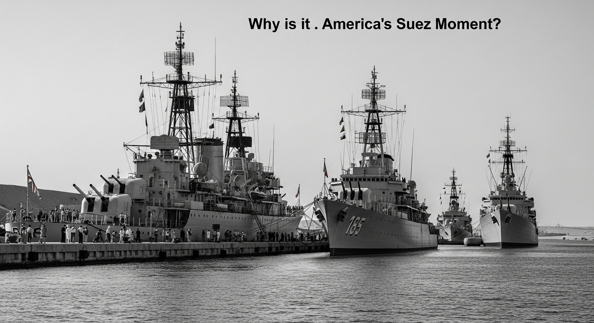
#115:28 ✓ 已生成
1956年蘇伊士運河，黑白歷史影像風格。巨大的英法戰艦逆光停泊在廣袤沙丘前，艦身被深邃陰影籠罩。刺眼陽光切割沙漠，高對比明暗。低角度廣角鏡頭，顆粒感強，營造沉重、戲劇性的歷史史詩感。
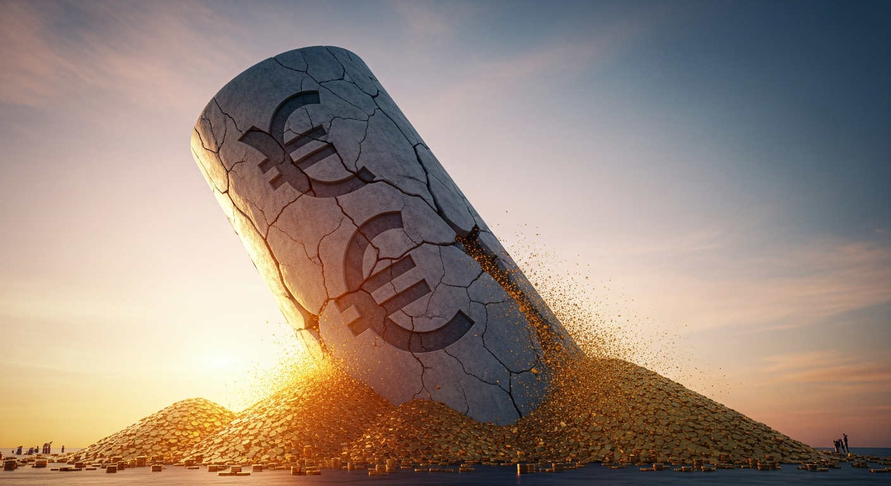
#126:16 ✓ 已生成
圖表：美元全球外匯儲備份額下滑，二十年前70以上至2024年57點8
05第五章：去美元化，數字已經在說話7:04 → 8:17
▶ 這場衝突不是去美元化的起點
7:04 📌 標題卡
【第五章：去美元化，數字已經在說話】標題卡
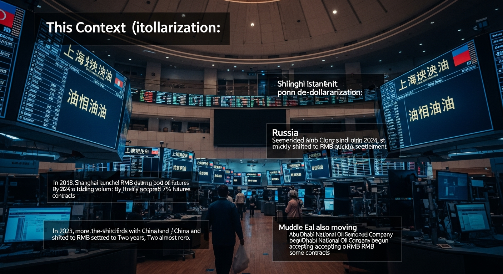
#137:06 ✓ 已生成
廣角鏡頭下，未來感十足的上海國際能源交易中心大廳，氣勢磅礴。巨型弧形交易螢幕牆上，藍綠色數據流如瀑布般傾瀉。明亮的橙色曲線從底端迅速攀升，將散佈全球的抽象能源地圖節點連接。冷冽的數位光芒主導畫面，光影對比強烈，營造出無聲而宏大的全球金融版圖重塑的電影感。
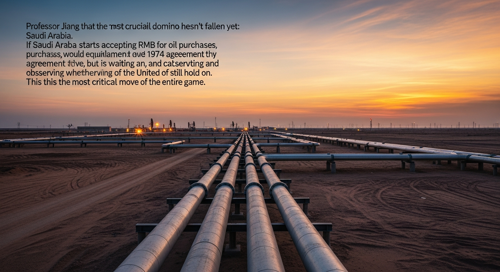
#147:50 ✓ 已生成
極致史詩廣角，黃昏時分，沙烏地阿拉伯一望無垠的沙漠中，巨大的石油設施群在低垂夕陽下顯得磅礴而孤寂。粗壯的輸油管道如鋼鐵巨蛇，蜿蜒伸向遠方地平線。天際從炙熱的橙紅漸變為深邃的靛藍，投下無限拉長的工業陰影。暖黃與鏽紅色調主導畫面，充滿莊嚴靜默，暗示著一個時代的權力交替與重大決策前的沉思。
06第六章：三個信號，現在就能追蹤8:17 → 9:32
▶ 江教授說 理解了這個架構
8:17 📌 標題卡
【第六章：三個信號，現在就能追蹤】標題卡
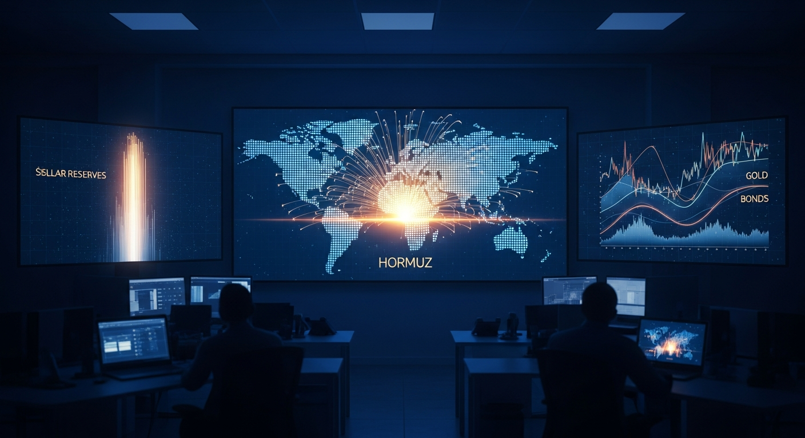
#158:19 ✓ 已生成
冰冷藍光深邃籠罩的深夜辦公室，多個巨幕環繞。主螢幕抽象世界地圖上，霍爾木茲數據光流湧動，一道金色脈絡靜默擴張。側螢幕，美元儲備光柱緩慢下沉，黃金與債券的兩條波形曲線同步向上交織。特寫鏡頭強調數據洪流，營造深邃、懸疑的電影感。
#169:23 ✓ 已生成
宏大廣角鏡頭，略高視角俯瞰海邊嶙峋礁石。晨曦初露，溫暖金光剛從海平面升起，輕柔勾勒出礁石的輪廓。深邃蔚藍的海面無限延伸，遠方與朦朧金色的天際線交匯。整體畫面靜謐而富有史詩感。
07第七章：六件你現在可以做的事9:32 → 11:55
▶ 江教授說 看懂了架構
9:32 📌 標題卡
【第七章：六件你現在可以做的事】標題卡
#179:34 ✓ 已生成
一張溫馨書桌的近景。暖黃桌燈投射著柔和光暈，照亮桌面與前方人物的側影。桌上屏幕泛出微弱冷光。窗外是深邃寧靜的墨藍夜景，都市光點如遙遠星辰。整體色調溫暖而沉靜，散發著專注的電影感。
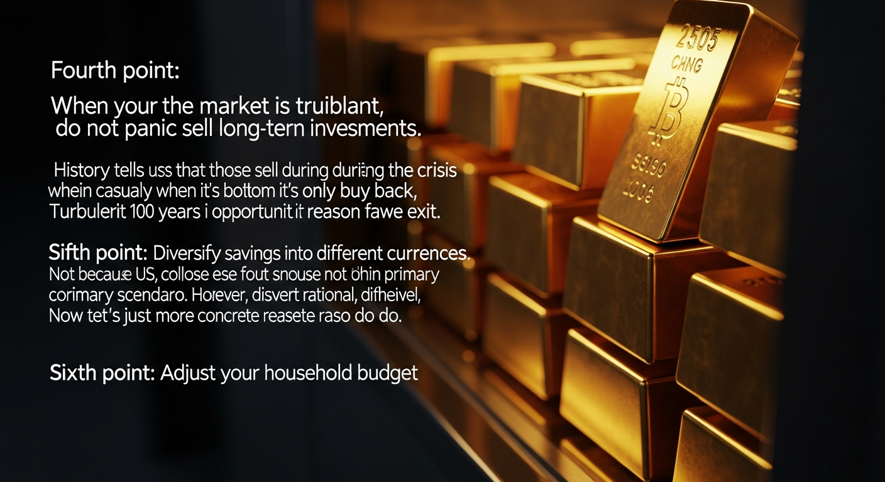
#1810:41 ✓ 已生成
一疊疊閃爍純金金條，深置斑駁金屬保險庫。一道溫暖銳利的金黃光束斜射而入，精準切割出金條棱角耀眼高光，投下深邃陰影。旁邊散落著少量不同貨幣的紙鈔和硬幣。整體色調以濃郁琥珀金與深邃墨綠棕為主。鏡頭以略低水平的電影感近景，凝視這份沉甸甸的財富，質感穩重且富歷史感。
08結語11:55 → 12:36
▶ 戰爭背後的戰爭
#1911:55 ✓ 已生成
黎明時分，史詩級超廣角俯瞰宏偉未來城市天際線。一道熾烈金光劃破濃重雲層，將摩天大樓群尖頂染成絢爛橘金。深邃紫藍的城市剪影與天際暖色調形成強烈對比。光影磅礴交織，營造出變革前夜的史詩感。
✍️ 中文腳本
載入中...
🔊 TTS 發音稿
（草稿階段尚未產生，確認腳本後製作）
{kind=link}
{kind=link}